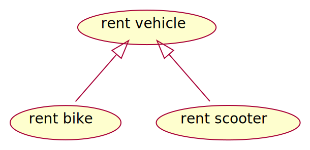

programming paradigms
- structural
- procedural
- object oriented
structural
- statement
- condition
- iteration
a = 4.2
a = a * 10
if a > 17
a -= 5
else:
a += 5
for i in range(10):
print(i)
for (var i = 0; i < 10; i++) {
console.log(i);
}


procedural
- extends structural with procedures
- a.k.a. functions, subroutines
- the two main concepts
- modularity: organizing the parts of a program into separate modules
- reusability
- scoping
- limit the scope of the variables
- modularity: organizing the parts of a program into separate modules
procedural - example

def power(a, b):
r = a
for _ in range(b - 1):
r *= r
return r
a = 3
a = power(a, 3)
object oriented programming
- extends procedural programming with the concept of objects
- main properties of OOP
- abstraction
- encapsulation
- inheritance
- polymorphism
1. abstraction
- hiding the complex reality while exposing only the necessary parts
- allows to focus on interactions at a higher level without needing to understand the details of the implementation
- achieved through abstract classes and interfaces, which define a contract for what methods an object must implement without specifying how they should be implemented
2. encapsulation
- bundling data (attributes) and methods (functions) that operate on that data into a single unit known as a class
- this property restricts direct access to some of the object’s
components
- private, public, protected
- can preventing unintended interference and misuse of the methods and
data
- by exposing only the necessary parts of an object through public methods
3. inheritance
- a mechanism that allows one class (subclass or derived class) to inherit attributes and methods from another class (superclass or base class)
- this promotes code reusability, as common functionality can be defined in a base class and reused in derived classes
- results hierarchical relationship which fosters modular design
- also increases dependency
class-based inheritance
- every object is defined by a class
- which is a definition or a blueprint
- describes the structure and behavior of an object
- most common
prototype based inheritance
The object function untangles JavaScript’s constructor pattern, achieving true prototypal inheritance. It takes an old object as a parameter and returns an empty new object that inherits from the old one. If we attempt to obtain a member from the new object, and it lacks that key, then the old object will supply the member. Objects inherit from objects. What could be more object oriented than that?
OO without inheritance
- Go does not support inheritance at all, though it is considered
object-oriented
- at least partially [Go FAQ]
- Bjarne Stroustrup (author of C++) has stated that it is possible to do OOP without inheritance (Stroustrup, 2015)
4. polymorphism
- allows objects to be treated as instances of their parent class
- enables flexibility in code, allowing for methods to perform
differently based on the object that invokes them
- method defined in a base class can be overridden in a derived class to provide specific behavior
Unified Modeling Language
- UML 2.0 released in 2005
- latest revision in 2017
- ISO/IEC 19501 standard
- designed to be a complete language of software modelling
- UML 2 has 14 diagrams in two categories: structure and behavior
most software developer do not use UML (in a formal way), but hand drawn sketches which often include UML elements (Baltes & Diehl, 2014)

use case diagram
- depicts the interactions between system users (actors) and the system itself
- used to specify the functional requirements
- provides a high-level view
- helping stakeholders to understand the system’s functionality
- it’s purpose is similar to the user story

elements of the use case diagram




use case diagram - example


class diagram
- describes the structure of a system by its classes
- their attributes, methods, and the relationships among them
- main building block of the object-oriented modeling
(most common) elements of a class diagram

based on PlantUML documentation
relations

{kind=link}
- association: structural relationship
- allows one object instance to cause another to perform an action on its behalf
- realization: e.g., class implements a interface
- aggregation: “has a” relation
- without life cycle control
- composition: stronger form of aggregation
- where the aggregate controls the lifecycle of the elements
Aggregation can occur when a class is a collection or container of other classes, but the contained classes do not have a strong lifecycle dependency on the container. The contents of the container still exist when the container is destroyed. (Wikipedia contributors, 2024)
class diagram - example

class diagram - example

object diagram
- special case of a class diagram
- graphical representation of the objects and their
relationships
at a specific moment in time - provides a snapshot of the system’s structure
- does not show anything architecturally different to class diagram

component diagram
- depicts the component structure and relations
- highlighting the interfaces

state diagram
- a visual representation of the states a system or an object can be in also the transitions between those states
- models the dynamic behavior of the system, capturing how it responds to different events over time
- shows the system’s life cycle
state diagram elements


state diagram - example


activity diagram
- graphical representations of workflows
- similar to flowcharts
- but uses UML notation
- and can visualize parallel processing
- has more features


parallel processing

a join synchronizes two inflows (waits for the slower)
merge after condition

swimlanes
- actions can be separated using “swimlanes”
- swimlanes can represent actors, components or other parts of the software system
sequence diagram

- shows process interactions arranged in time sequence
- depicts the processes and objects involved and the sequence of messages exchanged
- instead of the inner parts of a system, message exchange between software systems can be depicted
timing diagram
- focuses on the chronological order of events, showing how different objects interact with each other over time
- especially useful in real-time systems and embedded systems
- more like for documentation rather than modelling


source: PlantUML documentation
references
Baltes, S., & Diehl, S. (2014). Sketches and diagrams in practice. Proceedings of the 22nd ACM SIGSOFT International Symposium on Foundations of Software Engineering, 530–541.
Stroustrup, B. (2015). Object oriented programming without inheritance - ECOOP 2015. Youtube. https://www.youtube.com/watch?v=xcpSLRpOMJM
Wikipedia contributors. (2024). Class diagram — Wikipedia, the free encyclopedia. https://en.wikipedia.org/w/index.php?title=Class_diagram&oldid=1230720147.